Overview
Strategic Dashboards is an Enterprise Feature which is included in the ProcessMaker Enterprise Edition. It calculates Key Performance Indicators (KPIs), which provide decision makers who do not have programming skills the ability to see data about the performance of employees and processes. The data managed by the KPIs is shown inside dashboards which display statistical percentages and charts to show the information. The KPIs dashboards manage three different types of indicators which are explained in the next section.
To check whether Strategic Dashboards is available, go to Admin > Plugins > Enterprise Manager and click on the Enterprise Features tab to see whether Strategic Dashboards appears in the list of available features.
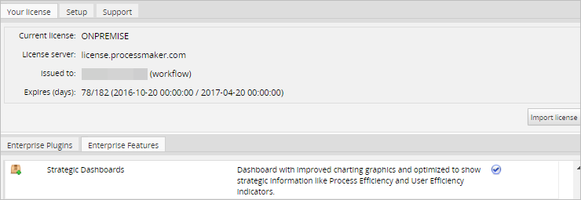
User Permissions
Before starting make sure the user has the following permissions assigned to their role:
| Permission | Description |
|---|---|
| PM_DASHBOARD | From ProcessMaker 2.5.2, the user needs the PM_DASHBOARD permission to access the main Dashboards and KPIs sections. |
| PM_SETUP_DASHBOARDS | From ProcessMaker 3.0.1.8, the user needs the PM_SETUP_DASHBOARDS permission to access the Dashboards option under the Admin section. |
The KPIs Indicators
Strategic Dashboards offers the following Key Performance Indicators to measure the efficiency of processes and employees, plus calculate their costs or savings.
Process Efficiency Index (PEI)
This “intelligent” index learns the process behavior over time and establishes optimal performance levels based on a combination of process factors, including standard deviation, resource costs, and comparative rankings. The Process Efficiency Index (PEI) is calculated in this manner:
| PEI = | te ———— (σ + ta) |
where:
- te - Expected time to complete the tasks in the process.
- ta - Average of actual time to complete the tasks in the process.
- σ - Standard deviation (calculated with all the cases in the process).
A PEI of 1 or more means that the efficiency is good, whereas a PEI below 1 means that the efficiency can be improved.
Employee Efficiency Index (EEI)
Similar to the PEI, this “intelligent” index measures the efficiency over time of each employee (ProcessMaker user) assigned to a representative group and ranks them based on efficiency and cost savings to the organization.
The Employee Efficiency Index (EEI) is calculated in this manner:
| EEI = | te —— ta |
where:
- te - Expected time to complete the tasks assigned to the employee.
- ta - Actual time to complete the tasks assigned to the employee.
An EEI below 1 means that the employee is taking longer to complete his/her tasks than expected, whereas an EEI over 1 means that the tasks are completed more quickly than expected. An EEI of 0.5 means that the employee takes twice as long to complete tasks as expected and 2 means that the employee takes half the expected time to complete his/her tasks.
Inbox Status (IS)
This option displays the status of the Inbox cases.
Costs or Savings
The cost of the task can be calculated based on the hourly cost of the user assigned to the task and the task duration. The "costs or savings" of a task is the difference between the expected cost and the actual cost of completing that task.
costs or savings = expected cost - actual cost
If the "costs or savings" is a positive number, then it represents savings on to the expected cost. On the other hand, if a negative number, then it represents costs, meaning that the task cost more than expected.
Similarly, the "costs or savings" of a process is the difference between the expected and actual costs for all the tasks in the process. The "costs or savings" of an employee is the difference between the expected and actual costs of all the tasks which have been completed by the employee.
To better understand how "costs or savings" are calculated, take the example of an organization which has the following process and employees:
- ProcessX:
- TaskA, 2 hours, assigned to:
- Bob
- Alice
- TaskB, 3 hours, assigned to:
- Alice
- Mary
- TaskA, 2 hours, assigned to:
- Users:
- Bob: $10/hour
- Alice: $20/hour
- Mary: $30/hour
The following 3 cases are executed in ProcessX:
- Case1: TaskA assigned to Bob, TaskB assigned to Mary
- Expected cost: (2h x $10/h) + (3h x $30/h) = $110
- Actual cost: (1.5h x $10/h) + (2.5h x $30/h) = $90
- Costs or savings: $110 - $90 = $20
- Case2: TaskA assigned to Alice, TaskB assigned to Mary
- Expected cost: (2h x $20/h) + (3h x $30/h) = $130
- Actual cost: (3h x $20/h) + (3h x $30/h) = $150
- Costs or savings: $130 - $150 = $-20
- Case2: TaskA assigned to Bob, TaskB assigned to Alice
- Expected cost: (2h x $10/h) + (3h x $20/h) = $80
- Actual cost: (3h x $10/h) + (3h x $20/h) = $90
- Costs or savings: $80 - $90 = $-10
As can be seen from these three cases, the cost of completing a case in ProcessX depends upon which employee is assigned to the tasks. It is important to keep in mind that the "costs or savings" should not be taken to represent the actual costs. For example, Case1 looks to be much better than the Case3, because Case1 cost $20 less than expected, and Case3 cost $10 more than expected, but the actual cost of the two cases is the same. Also keep in mind that a negative number in "costs or savings" means costs and a positive number means savings, which can be counter-intuitive.
Setting Task Duration and Hourly Costs
In order to properly calculate the Process and Employee Efficiency Indexes, it is necessary to set the task duration of all the tasks in every process. In addition, the hourly costs of each employee must be set to properly calculate the "costs or savings" for each task.
When the KPI Dashboard plugin is enabled, a Costs section is added to the profile of every user, which includes the Cost by hour and Units fields:
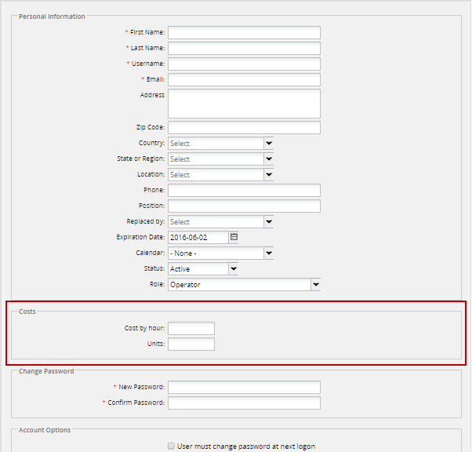
To set these fields, go to Admin > Users and enter the cost for each employee. The Cost by hour is the cost of employing the employee for one hour. For a better estimate of costs, include the extra costs for the employee (such as health care, equipment for the employee, etc.) The value entered in the Cost by hour field will be used to calculate the expected and actual cost of completing a task, which in turn is used to calculate the "costs or savings".
The monetary unit ($, €, ¥, R$, etc.) is set in the Units field. The monetary unit will displayed in the KPI dashboard, but is ignored when calculating the "costs or savings", so ProcessMaker does not convert between different monetary units. If needing to make comparisons between employees or processes, it is recommended to use the same monetary units for all employees.
In addition, set the timing for all the tasks in every process. Open each process for editing and then edit its task properties. Right click on the task, select Properties from the context menu, and go to the Timing Control section in order to edit the Task duration, Time unit, Count days by and Calendar fields.
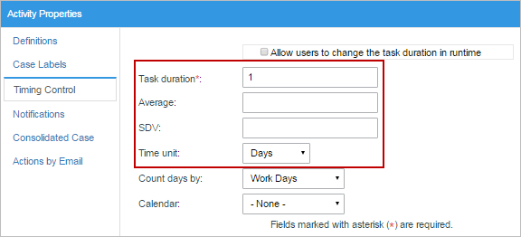
From version 3.0.1, the SDV (Standard Deviation) and the Average are also shown in this section. These fields are read-only and are completed as cases of the process are executed and this deviation is adjusted to have better results of the indexes.
From version 3.0.1, the process cost must also be set to have a better projection of how much the entire process will cost according to the performance of the actors involved in it. To set this cost, open the project and right click on the process map to access its context menu. Select the Edit Process option to see the properties of the current process. Set the cost of the process in the Cost field (which is mandatory, but, by default it is set as zero) and the currency unit of this cost (which is also mandatory, but set as $ by default).
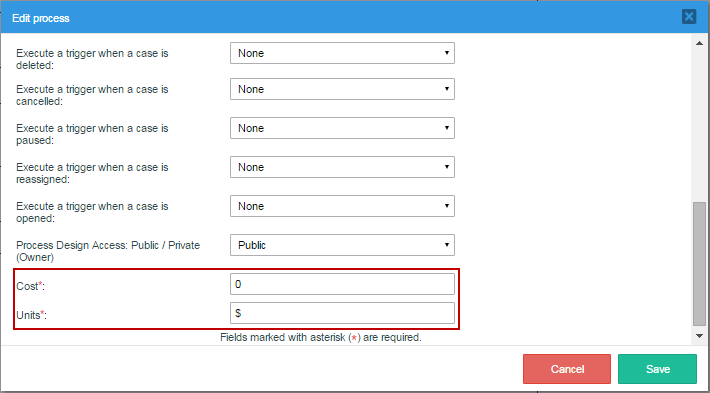
The KPIs Tab
Note: As of version 3.0.1.8, in order to avoid overwriting issues a new feature is available to forbid opening multiple browser instances of Processmaker. For more information go to: Configuration File env.ini: session_block.
Users who wish to see the KPIs and their Inbox Status can go to the KPIs tab in the main menu of ProcessMaker.

If there is only one dashboard created, the indicators configured for the dashboard will be shown. If there is more than one dashboard created in the KPIs, then the dashboard marked as the favorite will be shown by default.

Click on the  button at the upper-left corner of the window to see the list of dashboards assigned to the user.
button at the upper-left corner of the window to see the list of dashboards assigned to the user.
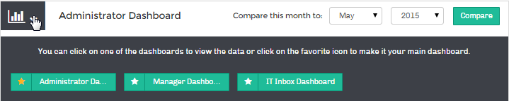
To define which dashboard will be shown by default when there is more than one dashboard assigned to the user, click on the star icon. This icon will be yellow for the dashboard currently selected by default, for the rest the icon will be empty. To view the information of another dashboard, simply click on the name of the dashboard.
Managing the Indicators
Depending on the indicator(s) set for the dashboard, the indicator(s) will be displayed inside the dashboard. For example, in a dashboard that has been configured to show the three types of indicators available in the KPIs:

The order in which the indicators are shown from left to right defines which indicator will be shown in the panel below by default. For instance, in the figure above the order of the indicators (from left to right) is: Employee Efficiency, Inbox Status, and Process Efficiency. Thus, the indicator shown by default in the panel below will be the Employee Efficiency.

To change the order of the indicators (and the panel shown by default) simply drag and drop the indicators to a new position:
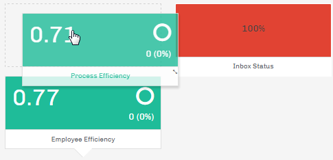
The "Employee Efficiency" and "Process Efficiency" boxes show the following information:
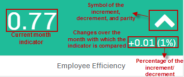
The big number on the right is the employee efficiency indicator for the current month. On the left, the current month is compared with another month, which can be selected. The percent difference between the two months is displayed. To select the month to compare with the current month, go to the upper panel of the window.
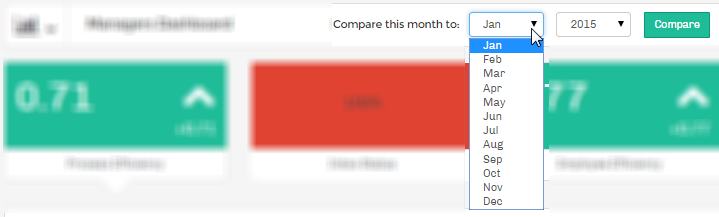
Select the month and the year from the dropdown menus and click on the "Compare" button. If efficiency in the current month has increased over the comparison month, then an up arrow will be displayed. If it has decreased, then a down arrow will be displayed. If there is no change, then a circle will be displayed.
Process Efficiency Indicator
To view the Process Efficiency indicator, click on the box that corresponds to the Process Efficiency indicator (whose title may vary), and the detailed information will be displayed in the following panel:

The information in the panel shows a pie chart with the "Efficiency Index" for the processes, the "Cost or Savings" of the processes and finally a pie chart which graphically shows the efficiency of the process(es) selected for the indicator.
The "Efficiency Index" is the indicator of the current month (as explained above). The "Cost or Savings" shows the monetary gains or losses of the process(es) selected for the indicator when the dashboard was created. The cost of the process is defined when the users involved in the process are created (see this section to learn more about it). If there were negative costs or savings (i.e., losses) in the efficiency of the processes, then the quantity will be shown in red with the minus symbol. If there are zero or positive costs or savings (i.e., profits) in the processes' efficiency, then the quantity will be shown in green.
The Process Efficiency indicator also shows a pie chart on the right showing the percentage of losses by process. Only inefficient processes which have losses are displayed in the pie chart. When there are no processes with losses, the message "No Inefficient Processes" is shown.
Hover the cursor of the mouse over sections of the pie chart to display the full name of the process and the amount of costs or savings in a tooltip:
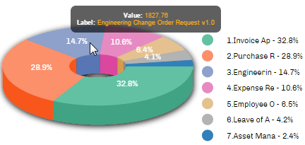
The symbol at the lower right-hand corner of the window indicates that there is more information below. Hover the mouse over this symbol to navigate down and view the detailed information about the efficiency of the processes selected for the dashboard.
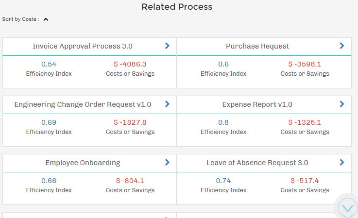
The efficiency indicator and the costs or savings is shown for each process. Clicking on the > arrow or the name of the process will display the same information about the tasks in the process, as well as its corresponding chart.
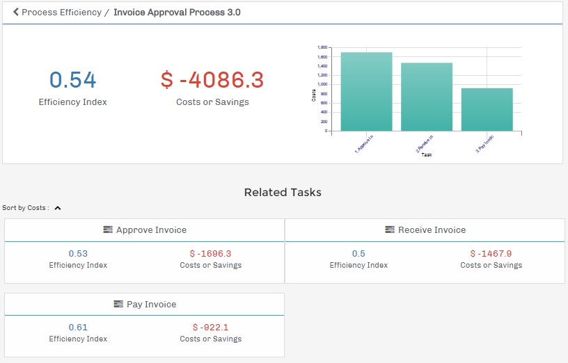
The same information shown for the whole process can also be displayed for each task in the process. The chart is also shown when there are losses (as in the figure above) where the Y axis represents the costs and the X axis shows the different tasks in the process. Hovering the mouse over a bar in this chart will display the amount of costs or savings and the name of the task.
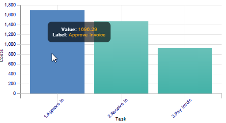
Employee Efficiency Indicator
To view the Employee Efficiency indicator, click on the Process Efficiency indicator box (whose title may vary) and the detailed information will be displayed in the following panel:
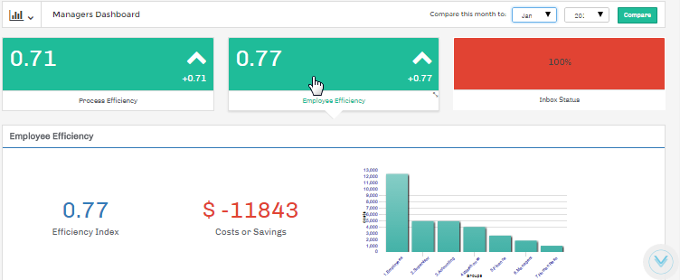
The "Efficiency Index" for the current month is displayed. The "Costs or Savings" shows the monetary losses or gains of the user groups whose members worked on cases for the processes selected when the dashboard was created. The cost of the process is defined when the users involved in the process were created (see this section to learn more). If the costs are a negative number (i.e., losses) for the employees involved in the process(es), then the quantity will be shown in red with the minus symbol. If there were zero or positive savings in the efficiency of the employees, then the quantity will be shown in green.
The Employee Efficiency indicator also shows a bar chart on the right, which graphically displays the user groups that are the most inefficient overall. The chart's X axis represents the costs and the Y axis shows the different user groups. This chart is only shown when there are negative costs or savings. When there are no inefficient groups, the message "No Inefficient User Groups" is shown.
Hover the cursor of the mouse over bars in the chart to display the name of the group and the amount of costs in a tooltip:
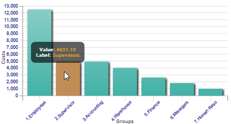
The symbol in the lower right-hand corner indicates that there is more information available. Hover the mouse over this symbol to navigate down and view the efficiency of the groups for the processes which were selected for the dashboard.

The efficiency indicator and the costs or savings for each group is shown. When clicking on the > arrow or the name of a group, information about each employee in the group is shown, as well as their ranking in the group.
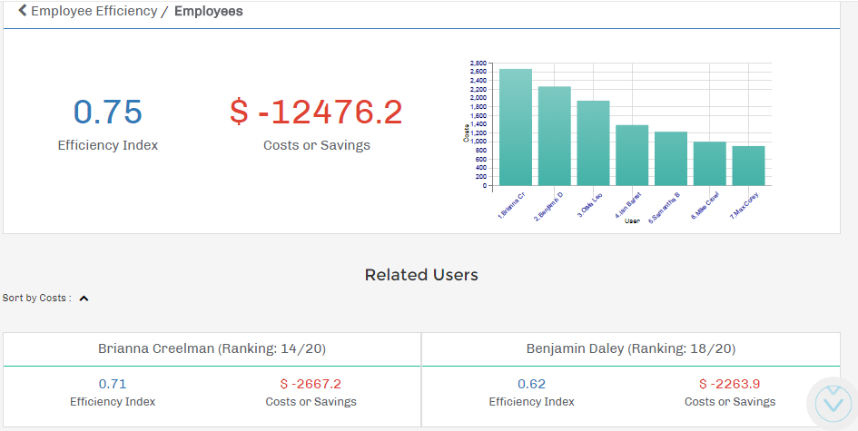
When there are losses, the bar chart is also shown. The Y axis represents the costs and the X axis represents the different employees in the group. The details of the employees, in the panel below, also contains the ranking of employees ordered by efficiency in terms of costs. In parentheses, the current ranking of the user is shown out of the total number of users in the group.
Inbox Status
The Inbox Status indicator groups cases found in the Inbox, according to their due date. Note that it only includes cases with TO_DO status, so cases with DRAFT, PAUSED, CANCELLED, DELETED and COMPLETED status are not included.

Where:
- Overdue. Displays cases in the Inbox which are currently overdue, meaning they have surpassed the due date for the current task.
- At Risk. Displays cases in the Inbox which are close to being overdue, meaning that they are close to the due date for the current task. The number of at-risk days before the due date can be configured below.
- On Time. Displays cases in the Inbox which are on time, meaning they have not surpassed their due date for the current task.
In this example, 79% of the cases are overdue, 14% are at risk and 7% are on time.
Creating and Configuring a KPIs Dashboard
Login to ProcessMaker with a user such as "admin" who has the PM_SETUP and PM_SETUP_ADVANCE permissions in his/her role. Then go to ADMIN > Settings > KPIs.

The list of dashboards, which have already been created for the KPIs, are shown in the list:
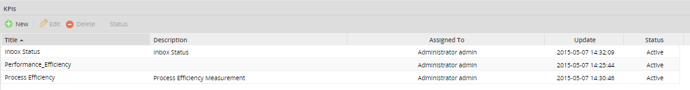
In the menu bar above the list, the following buttons are used to manage the KPIs:
- New. Create a new KPI dashboard.
- Edit. This option edits the information about a selected dashboard. To enable this button, first select a dashboard from the list.
- Delete. This option deletes a selected dashboard. To enable it, first select a dashboard from the list.
- Status. Click on this button to "Deactivate" the selected dashboard if it is currently enabled (the icon will be a red spot). If the dashboard is deactivated, it will not be shown under the Dashboards menu.

If the selected dashboard is currently disabled, then the "Activate" button (with a green spot) will be shown. Click on it to activate a disabled dashboard.

The following information about the dashboards is shown in the list:
- Title. Title of the KPI dashboard.
- Description. A brief description of the dashboard.
- Assigned to. The user(s) and/or group(s) which are assigned to view and manage the dashboard inside the KPIs option.
- Update. Date and time when the KPIs was last updated.
- Status. Displays the status of a KPIs, whether it is Active or Inactive.
Creating a KPIs Dashboard
To create a KPIs dashboard, click on New and fill in the following form to configure the dashboard:
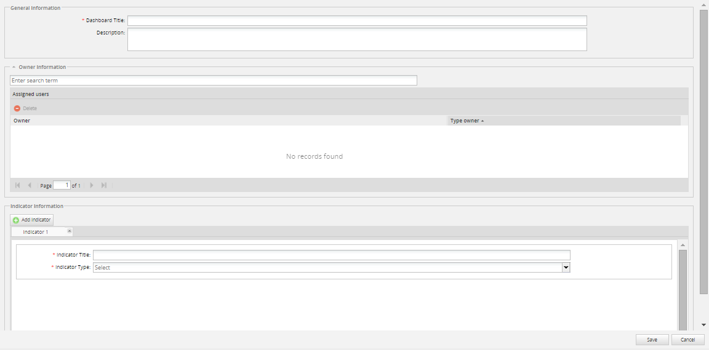
Dashboard fields are listed below:
General information:
- Dashboard title. Required field. Give the dashboard a name.
- Description. Enter a description of what the dashboard is about.
Owner Information:
- Assigned Users. Select one or more users who will be assigned to view the dashboard.
Indicator Information:
- Add Indicator. Add indicators in order to measure the efficiency. Create up to 4 indicators per dashboard.
- Indicator Title. Give the Indicator a title.
- Indicator Type. Choose among the three types of indicators listed in the dropdown.
Each one of the dashboards options is listed below.
Adding Users
In order to have access to a KPIs Dashboard, users must be assigned to the dashboard. In order to add users, go to the Owner Information section:
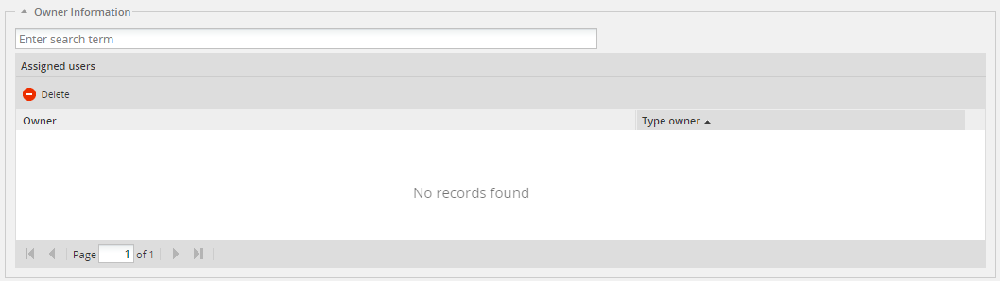
- Enter search term. To search for a user, either enter the complete name or username or the initial letter. As the user types into the field, the suggest box will display a list of matching users.
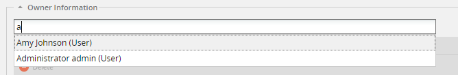
If no user is entered in the search box, a list of all the available users will be displayed:
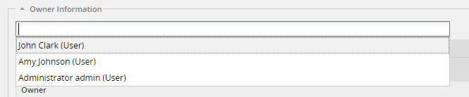
Select the user that will be automatically added to the list of assigned users.

- Assigned Users. It displays the list of assigned users who have access to the dashboards. Delete a user by clicking on his/her name and clicking on the Delete option:
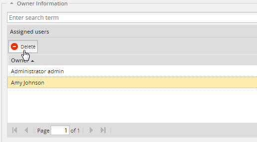
Adding Indicators
Indicators will help users to measure their efficiency based on the chosen indicator. By default, an indicator is already created. If more indicators are needed click on the Add Indicator button:

The new indicator will be created in a new tab:
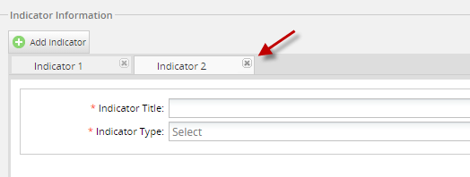
Note: Remember that only 4 indicators can be created per dashlet. If trying to create more than 4, the following message will display:
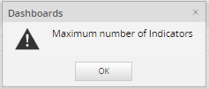
Each indicator must be configured separately:
- Indicator Title. Give the indicator a title.
- Indicator Type. Choose among the three different indicators:
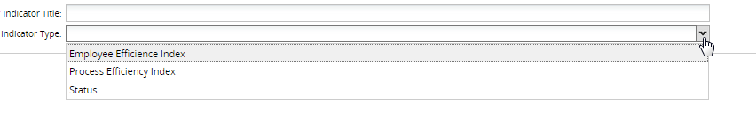
- Process. After an indicator is selected, then select which process the indicator will be calculated for. To calculate the indicator for all the processes in the workspace, select the "All Processes" option.
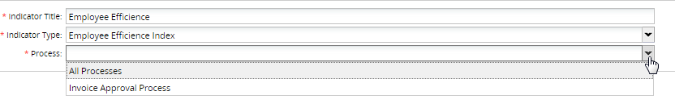
To delete an indicator, click on the X button that appears next to the indicator's name:
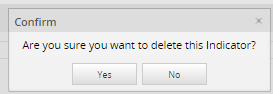
Updating the KPIs Using ProcessMaker's Cron
The KPIs are only calcuted when ProcessMaker's cron is executed. This allows the KPIs to be periodically calculated in the background, which improves Dashboard performance and ensures that the KPIs are recalculated regularly. Keep in mind that the KPIs may not include data entered since the last execution of the cron.php file. This execution calculates the expected and actual time to execute tasks and their costs, and writes these numbers in the USR_REPORTING and PRO_REPORTING tables in the database, which hold the data used to calculate the KPIs.
To execute the cron.php file for testing purposes, open a command-line terminal in the server where ProcessMaker is installed and execute the /workflow/engine/bin/cron.php file. The location of this file depends on where ProcessMaker was installed:
Windows:
Bitnami Installer for ProcessMaker between versions 3.0.1.8 and 3.3.X:
Automatic Installer in ProcessMaker 3.0.1.7 or earlier in Windows XP/2003:
Automatic Installer in ProcessMaker 3.0.1.7 or earlier in Windows Vista/7/8/10/2008/2012:
Linux/UNIX:
Manual installation:
Bitnami installation in ProcessMaker between versions 3.0.1.8 and 3.3.X:
Note: It is necessary to enclose the path in quotation marks due to the space in Program Files.
When the cron.php file is executed, it will display a message like the one below:
After executing the cron.php file, it is necessary to execute the report_by_user option of the cron to calculate the behavior of the users (i.e. where users are working on or starting cases of a process they are assigned to).
Then, execute the report_by_process option of the cron to calculate the behavior of a process (i.e. if users are interacting with the process).
To affect only a specific workspace, use the +wWORKSPACE option with any of the cron.php options. For example:
It is also possible to execute specific actions of the cron.php, such as:
To calculate all the KPIs in all the workspaces:
php -f cron.php calculate-
To calculate all the KPIs in a specified workspace, such as the default "workflow" workspace:
php -f cron.php +wworkflow calculate -
To calculate the app data, which refers to all cases in all processes:
php -f cron.php calculateapp